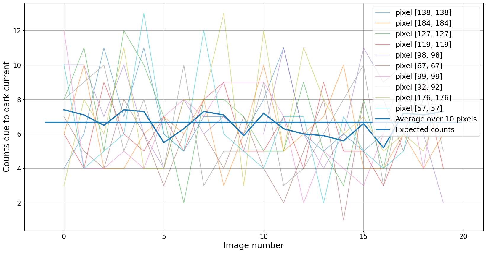
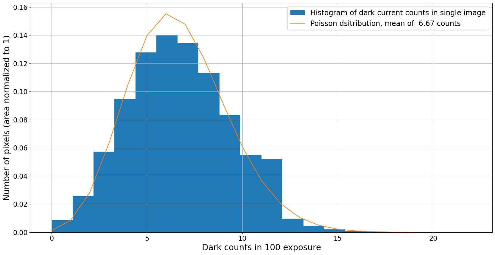
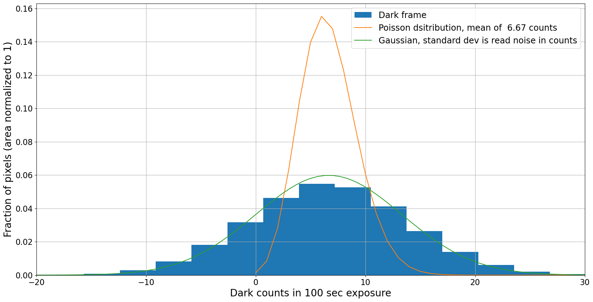
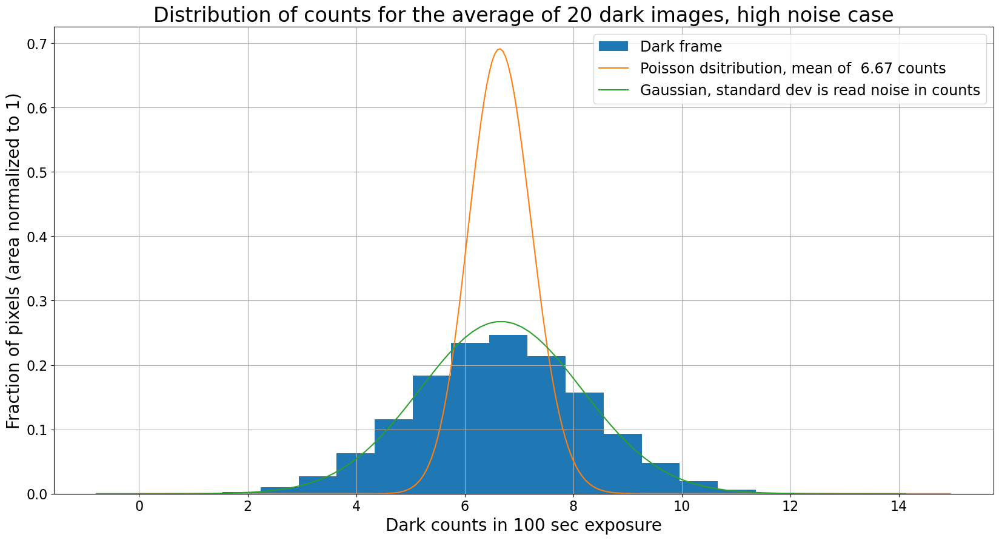
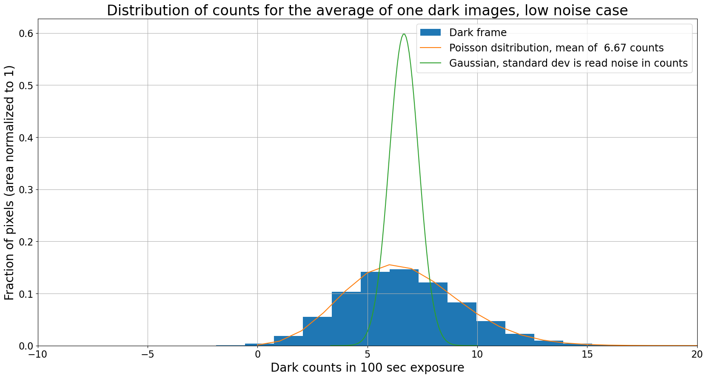
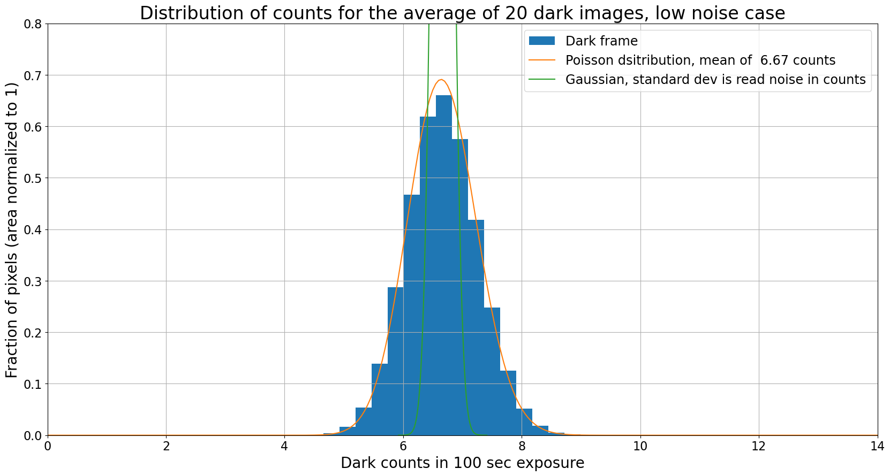

Темновой ток: идеальный случай
Contents
3.1. Темновой ток: идеальный случай#
import numpy as np
from scipy import stats
%matplotlib inline
from matplotlib import pyplot as plt
from image_sim import dark_current, read_noise
# Use custom style for larger fonts and figures
plt.style.use('guide.mplstyle')
3.1.1. Dark frame измеряет темновой ток#
Напомним, что темновой ток относится к отсчетам (электронам), генерируемым в пикселе из-за того, что электрон в пикселе имеет достаточно энергии, чтобы “освободиться” и зарегистрироваться как отсчет. Распределение тепловых энергий электронов в пикселе следует распределению Максвелла-Больцмана, в котором большинство электронов имеют энергию около \(kT\), где \(T\) — температура сенсора, а \(k\) — постоянная Больцмана. Существует распределение энергий, и иногда электрон будет иметь достаточно высокую энергию, чтобы перейти в зону проводимости чипа, регистрируясь так же, как электрон, возбужденный фотоном. Поскольку распределение Максвелла-Больцмана зависит от температуры, скорость, с которой темновой ток появляется в пикселе, также ожидается зависящей от температуры.
Dark frame (также называемый dark image) — это изображение, сделанное вашей камерой с закрытым затвором. Это сумма уровня bias вашей камеры, шума считывания и темнового тока.
Вы измеряете темновой ток в вашей камере, делая dark frames.
3.1.1.1. Вспомогательные функции#
Пара функций, которые будут повторно использоваться несколько раз в этом notebook, определены ниже.
Функция для генерации dark frames
Эта функция генерирует набор dark frames. Она будет использоваться несколько раз ниже.
def generate_dark_frames(n_frames,
dark_rate=0,
noise=0,
gain=1,
exposure=10,
image_size=500):
base_image = np.zeros([image_size, image_size])
darks = np.zeros([n_frames, image_size, image_size])
for n in range(n_images):
darks[n] = dark_current(base_image, dark_rate, exposure, gain=gain, hot_pixels=False)
if noise > 0:
darks[n] = darks[n] + read_noise(base_image, noise, gain=gain)
return darks
Функция для построения распределения темновых отсчетов
Функция ниже строит:
def plot_dark_with_distributions(image, rn, dark_rate,
n_images=1,
exposure=1,
gain=1,
show_poisson=True,
show_gaussian=True):
"""
Plot the distribution of dark pixel values, optionally overplotting the expected Poisson and
normal distributions corresponding to dark current only or read noise only.
Parameters
----------
image : numpy array
Dark frame to histogram.
rn : float
The read noise, in electrons.
dark_rate : float
The dark current in electrons/sec/pixel.
n_images : float, optional
If the image is formed from the average of some number of dark frames then
the resulting Poisson distribution depends on the number of images, as does the
expected standard deviation of the Gaussian.
exposure : float
Exposure time, in seconds.
gain : float, optional
Gain of the camera, in electron/ADU.
show_poisson : bool, optional
If ``True``, overplot a Poisson distribution with mean equal to the expected dark
counts for the number of images.
show_gaussian : bool, optional
If ``True``, overplot a normal distribution with mean equal to the expected dark
counts and standard deviation equal to the read noise, scaled as appropiate for
the number of images.
"""
h = plt.hist(image.flatten(), bins=20, align='mid',
density=True, label="Dark frame");
bins = h[1]
expected_mean_dark = dark_rate * exposure / gain
pois = stats.poisson(expected_mean_dark * n_images)
pois_x = np.arange(0, 300, 1)
new_area = np.sum(1/n_images * pois.pmf(pois_x))
if show_poisson:
plt.plot(pois_x / n_images, pois.pmf(pois_x) / new_area,
label="Poisson dsitribution, mean of {:5.2f} counts".format(expected_mean_dark))
if show_gaussian:
# The expected width of the Gaussian depends on the number of images.
expected_scale = rn / gain * np.sqrt(n_images)
# Mean value is same as for the Poisson distribution
expected_mean = expected_mean_dark * n_images
gauss = stats.norm(loc=expected_mean, scale=expected_scale)
gauss_x = np.linspace(expected_mean - 5 * expected_scale,
expected_mean + 5 * expected_scale,
num=100)
plt.plot(gauss_x / n_images, gauss.pdf(gauss_x) * n_images, label='Gaussian, standard dev is read noise in counts')
plt.xlabel("Dark counts in {} sec exposure".format(exposure))
plt.ylabel("Fraction of pixels (area normalized to 1)")
plt.grid()
plt.legend()
3.1.2. Теория темнового тока#
Ожидаемый сигнал в экспозиции dark frame времени \(t\) пропорционален \(t\). Если мы назовем темновые электроны в экспозиции \(d_e(t)\) и темновой ток \(d_c(T)\), где \(T\) — температура, то
Для камер с жидкостным охлаждением, особенно охлаждаемых жидким азотом, рабочая температура не меняется. Для термоэлектрически охлаждаемых камер вы можете установить желаемую рабочую температуру. В результате вы должны иметь возможность игнорировать температурную зависимость темнового тока.
Термоэлектрические охладители обычно могут охлаждать на некоторую фиксированную величину ниже температуры окружающей среды. Хотя в принципе вы можете выбрать всегда охлаждать на одну и ту же фиксированную величину, например, на \(50^\circ\)C ниже температуры окружающей среды, есть преимущество в том, чтобы всегда запускать вашу камеру при одной и той же температуре: dark frames, сделанные в одну дату, потенциально полезны в другую дату. Если рабочая температура меняется, то вам нужно убедиться, что вы делаете dark frames каждый раз, когда наблюдаете, если только вы не тщательно охарактеризовали температурную зависимость вашего темнового тока.
Оказывается, что по практическим причинам — не все пиксели в вашей камере имеют одинаковый темновой ток — обычно лучше делать dark frames каждый раз, когда вы наблюдаете в любом случае.
3.1.3. Иллюстрация с только темновым током#
Для целей иллюстрации некоторых свойств темнового тока и dark frames мы сгенерируем несколько смоделированных изображений, в которых отсчеты обусловлены только темновым током. Мы будем использовать эти значения:
Темновой ток \(d_c(T) = 0.1 e^-\)/pixel/sec
Gain \(g = 1.5 e^-\)/ADU
Шум считывания 0 \(e^-\)
dark_rate = 0.1
gain = 1.5
read_noise_electrons = 0
3.1.3.1. Темновой ток — это случайный процесс#
Темновые отсчеты в dark frame являются отсчетами и поэтому следуют распределению Пуассона. График ниже показывает темновой ток в нескольких случайно выбранных пикселях в 20 различных смоделированных изображениях, каждое с временем экспозиции 100 сек. Обратите внимание, что отсчеты варьируются от изображения к изображению, но среднее значение очень близко к ожидаемому значению.
Ожидаемое значение темновых отсчетов для этого изображения составляет \(d_e(t)/g = 6.67~\)counts.
exposure = 100
n_images = 20
n_pixels = 10
image_size = 500
plt.figure(figsize=(20, 10))
darks = generate_dark_frames(n_images, dark_rate=dark_rate, noise=read_noise_electrons,
gain=gain, exposure=100, image_size=image_size)
# Pick several random pixels to plot
pixels = np.random.randint(50, high=190, size=n_pixels)
pixel_values = np.zeros(n_images)
pixel_averages = np.zeros(n_images)
for pixel in pixels:
for n in range(n_images):
pixel_values[n] = darks[n, pixel, pixel]
plt.plot(pixel_values, label='pixel [{0}, {0}]'.format(pixel), alpha=0.5)
pixel_averages += pixel_values
plt.plot(pixel_averages / n_pixels,
linewidth=3,
label='Average over {} pixels'.format(n_pixels))
# plt.xlim(0, n_images - 1)
plt.hlines(dark_rate * exposure / gain, *plt.xlim(),
linewidth=3,
label="Expected counts")
plt.xlabel('Image number')
plt.ylabel('Counts due to dark current')
plt.legend()
plt.grid()

3.1.3.2. Темновые отсчеты следуют распределению Пуассона#
Распределение ниже показывает нормализованную гистограмму количества пикселей как функцию темновых отсчетов в каждом пикселе для одного из смоделированных dark frames. Поверх гистограммы наложено распределение Пуассона со средним \(d_e(t_{exp}) = d_C(T) * t_{exp} / g\), где \(t_{exp}\) — время экспозиции.
plt.figure(figsize=(20, 10))
h = plt.hist(darks[-1].flatten(), bins=20, align='mid', density=True,
label="Histogram of dark current counts in single image");
bins = h[1]
pois = stats.poisson(dark_rate * exposure / gain)
pois_x = np.arange(0, 20, 1)
plt.plot(pois_x, pois.pmf(pois_x),
label="Poisson dsitribution, mean of {:5.2f} counts".format(dark_rate * exposure / gain))
plt.xlabel("Dark counts in {} exposure".format(exposure))
plt.ylabel("Number of pixels (area normalized to 1)")
plt.legend()
plt.grid()

3.1.4. Иллюстрация с темновым током и шумом считывания#
Теперь давайте пройдемся по той же паре графиков с ненулевым шумом считывания. Для целей иллюстрации мы рассмотрим два случая:
Умеренный шум считывания 10 \(e^-\) на считывание, типичный для исследовательской CCD низкого уровня
Низкий шум считывания 1 \(e^-\) на считывание
В обоих случаях мы продолжим с параметрами выше для генерации наших кадров:
Темновой ток \(d_c(T) = 0.1 e^-\)/pixel/sec
Gain \(g = 1.5 e^-\)/ADU
Время экспозиции 100 сек
С этими выборами ожидаемый темновой отсчет составляет 6.67 count, что составляет 10 \(e^-\). То есть, не случайно, одно из значений для шума считывания, которое было выбрано.
Скорость темнового тока в этом примере несколько выше, чем у реального CCD. Большой темновой ток используется здесь для демонстрации взаимодействия темнового тока и шума считывания, и время экспозиции было выбрано так, что ожидаемые темновые электроны составляют 10\(e-\).
3.1.4.1. Высокий шум#
В этом первом случае шум считывания и темновой ток оба составляют 10\(e^-\). Как мы увидим вскоре, dark frame на самом деле измеряет шум считывания, а не темновой ток, при этих обстоятельствах.
high_read_noise = 10
darks = generate_dark_frames(n_images, dark_rate=dark_rate, noise=high_read_noise,
gain=gain, exposure=exposure, image_size=image_size)
image_average = darks.mean(axis=0)
plt.figure(figsize=(20, 10))
plot_dark_with_distributions(darks[-1], high_read_noise, dark_rate,
n_images=1, exposure=exposure, gain=gain)
plt.xlim(-20, 30);

Этот dark frame измеряет шум, а не темновой ток
Распределение пикселей явно является распределением Гаусса с шириной, определяемой шумом считывания, а не базовым распределением Пуассона, которое dark frame пытается измерить. Единственный способ обойти это (предполагая, что темновой ток достаточно велик, чтобы его вообще нужно было вычитать) — сделать экспозицию достаточно длинной, чтобы ожидаемые отсчеты превышали темновой ток.
Мы рассмотрим этот случай ниже, добавив гораздо меньшее количество шума.
Комбинирование не восстанавливает темновой ток
Графики ниже показывают результат усреднения нескольких (20 в данном случае) dark frames вместе. Мы могли бы надеяться, что усреднение уменьшает шум настолько, что распределение пикселей становится распределением Пуассона, ожидаемым для dark frame. Это не так.
Примечание: Для правильного расчета ожидаемого распределения отсчетов в среднем dark frames вы должны начать с ожиданий для суммы изображений, затем масштабировать отсчеты вниз на количество изображений, а распределение вверх на тот же коэффициент, чтобы распределение оставалось нормализованным.
plt.figure(figsize=(20, 10))
plot_dark_with_distributions(image_average, high_read_noise, dark_rate,
n_images=20, exposure=exposure, gain=gain)
plt.title("Distribution of counts for the average of 20 dark images, high noise case");

Даже комбинация 20 dark frames не приводит к распределению Пуассона; распределение все еще является распределением Гаусса, ширина которого определяется шумом считывания и количеством изображений.
3.1.4.2. Низкий шум#
В этом случае шум считывания составляет 1 \(e^-\), ниже в десять раз, чем ожидаемый темновой ток для этого времени экспозиции, 10\(e^-\).
Этот случай почти никогда не встречается в реальных CCD, но он иллюстрирует, что при достаточно низком шуме считывания вы можете восстановить распределение Пуассона темнового тока.
low_read_noise = 1
darks = generate_dark_frames(n_images, dark_rate=dark_rate, noise=low_read_noise,
gain=gain, exposure=exposure, image_size=image_size)
image_average = darks.mean(axis=0)
plt.figure(figsize=(20, 10))
plot_dark_with_distributions(darks[-1], low_read_noise, dark_rate,
n_images=1, exposure=exposure, gain=gain)
#plt.ylim(0, 0.8)
plt.xlim(-10, 20)
plt.title("Distribution of counts for the average of one dark images, low noise case");

plt.figure(figsize=(20, 10))
plot_dark_with_distributions(image_average, low_read_noise, dark_rate,
n_images=20, exposure=exposure, gain=gain)
plt.ylim(0, 0.8)
plt.xlim(0, 14)
plt.title("Distribution of counts for the average of 20 dark images, low noise case");

3.1.5. Итоговые замечания#
В идеальном случае темновые отсчеты следуют распределению Пуассона со средним значением, пропорциональным времени экспозиции. На практике шум считывания может доминировать над темновым током, особенно для коротких экспозиций. Комбинирование множественных dark frames не восстанавливает распределение Пуассона, если шум считывания сравним с темновым током.